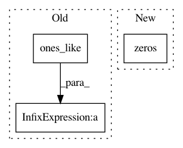

428516056abe41f135133e732a8d44af6ce9a234,rllib/utils/exploration/ornstein_uhlenbeck_noise.py,OrnsteinUhlenbeckNoise,_get_torch_exploration_action,#OrnsteinUhlenbeckNoise#Any#Any#Any#,129
Before Change
action = torch.clamp(
det_actions + noise,
self.action_space.low * torch.ones_like(det_actions),
self.action_space.high * torch.ones_like(det_actions))
// No exploration -> Return deterministic actions.
else:
After Change
det_actions = action_dist.deterministic_sample()
scale = self.scale_schedule(self.last_timestep)
gaussian_sample = scale * torch.normal(
mean=torch.zeros(self.ou_state.size()), std=1.0) \
.to(self.device)
ou_new = self.ou_theta * -self.ou_state + \
self.ou_sigma * gaussian_sample
In pattern: SUPERPATTERN
Frequency: 3
Non-data size: 3
Instances
Project Name: ray-project/ray
Commit Name: 428516056abe41f135133e732a8d44af6ce9a234
Time: 2020-04-15
Author: sven@anyscale.io
File Name: rllib/utils/exploration/ornstein_uhlenbeck_noise.py
Class Name: OrnsteinUhlenbeckNoise
Method Name: _get_torch_exploration_action
Project Name: IBM/adversarial-robustness-toolbox
Commit Name: 8d9e06745e0c05fd3877bb1d5143309b342c362e
Time: 2020-07-05
Author: kz.takemoto@gmail.com
File Name: utils/resources/create_inverse_gan_models.py
Class Name:
Method Name: build_gan_graph
Project Name: keras-team/keras
Commit Name: c1a72b36444c8027c27c2dc02dc03d5b69a5e389
Time: 2016-10-13
Author: jeanmichel.arbona@gmail.com
File Name: keras/layers/recurrent_convolutional.py
Class Name: LSTMConv2D
Method Name: get_constants